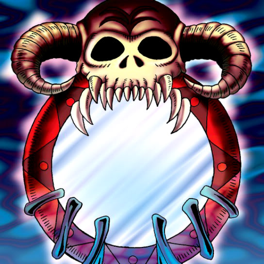

Job-Change Mirror

STATS
ATK: 800
DEF: 1300DECK COST
Deck Cost per Card: 21Fusion List (24 Possible Fusions)
- Job-Change Mirror + Air Eater = Summoned Skull
- Job-Change Mirror + Barox = Ryu-Kishin Powered
- Job-Change Mirror + Big Eye = Ryu-Kishin Powered
- Job-Change Mirror + Candle of Fate = Ryu-Kishin Powered
- Job-Change Mirror + Castle of Dark Illusions = Ryu-Kishin Powered
- Job-Change Mirror + Crass Clown = Summoned Skull
- Job-Change Mirror + Dark Chimera = Summoned Skull
- Job-Change Mirror + Dark King of the Abyss = Ryu-Kishin Powered
- Job-Change Mirror + Dark Prisoner = Ryu-Kishin Powered
- Job-Change Mirror + Embryonic Beast = Summoned Skull
- Job-Change Mirror + Horn Imp = Summoned Skull
- Job-Change Mirror + King of Yamimakai = Summoned Skull
- Job-Change Mirror + La Jinn the Mystical Genie of the Lamp = Summoned Skull
- Job-Change Mirror + Man-Eating Treasure Chest = Summoned Skull
- Job-Change Mirror + Mask of Darkness = Ryu-Kishin Powered
- Job-Change Mirror + Metal Guardian = Ryu-Kishin Powered
- Job-Change Mirror + Mystic Lamp = La Jinn the Mystical Genie of the Lamp
- Job-Change Mirror + Neck Hunter = Summoned Skull
- Job-Change Mirror + Reaper of the Cards = Ryu-Kishin Powered
- Job-Change Mirror + Ryu-Kishin = Summoned Skull
- Job-Change Mirror + Terra the Terrible = Ryu-Kishin Powered
- Job-Change Mirror + The Shadow Who Controls the Dark = Ryu-Kishin Powered
- Job-Change Mirror + Ushi Oni = Summoned Skull
- Job-Change Mirror + Whiptail Crow = Ryu-Kishin Powered